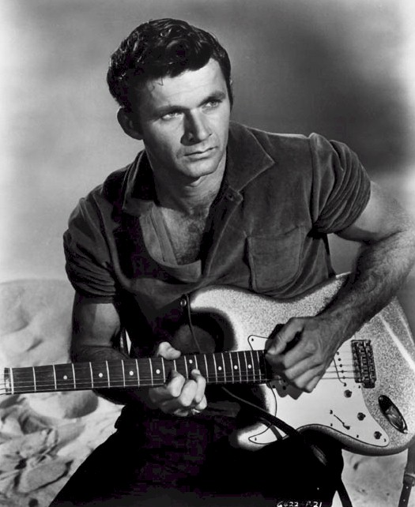
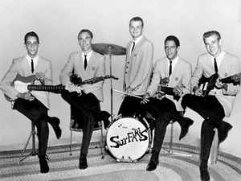
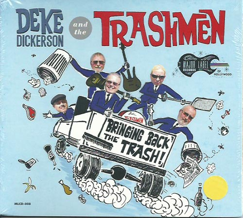
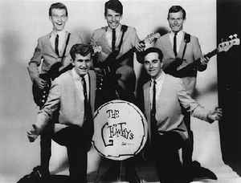
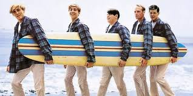

Hjem Tilbake
Good Times Music in USA
1960-tallet
Undergren av rock
Sør California
Medium raskt tempo
Dick Dale var en av grunnleggerene
Også kalt for surf
Rockabilla påvirket en vill, hovedsakelig instrumental, stil kalt surfemusic.
Surfekulturen så ikke selv på seg som en del av rockebevegelsen, men som en konkurrerende ungdomskultur til rock'n'roll. Denne stilen besto av et raskere tempo, innovativ perkusjon og eletriske gitarer med mye klan og ekko.
Mange kjente bandlaget musikk innenfor begge sjangrene.
Surfesjangeren var regnet som en enkel sjanger, til tross for den store musikale variasjonene.
Surf pop
Inkluderer både surfe ballader og dansemusikk med vokal.
Dette ble kalt strandmusikk, som var populær også utenfor surfemiljøet.
The Beach boys var en av de store artistene.
Surf rock
Generelt instrumental sjanger med el-gitarer eller saksofon som spiller hovedmelodien.
Kjente artister var The trash man, the chantays og the surfaris.
Instrumenter
El-gitar
Fender Bass
Saksofon
Artister og band
Dick Dale
Var en av grunnleggerene
Inspirerte de fleste av bandene
Blandet musikk fra hele verden
Kjent som "The King of Surf Guitar"

The Surfaris
Fra Glendora, California
Startet opp i 1962
Ga ut syv albumer.

The Trahs Man
Fra Minnesota.
Rockeband som sang i 1963.

The Chantays
Ble dannet i 1961.
besto av fem high school venner som startet sitt eget band.
Ga ut fire albumer.

The Beach boys
Fra hawthorne, Califorfnia.
Lagde musikk fra begge sjangrene.
Lagde surfemusikk med lavere tempo og la til fyldige harmonivokaler. Denne stilen ble kjent som 'the California Sound'
Kjent som et av de mest innflytelsesrike bandene i den moderne populærmusikkens historie.

The Beat Tornados
Fra Arendal, Norge
Gjorde seg godt bemerket i Norge og har gitt ut 3 album.

Musikken
Laget av:
Torstein
Christoffer
Josef